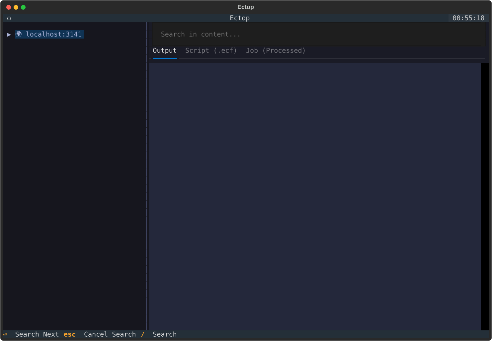
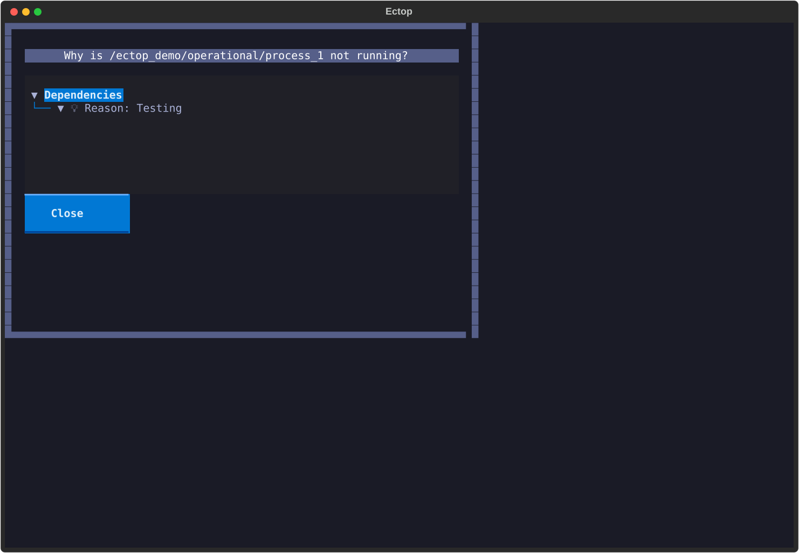
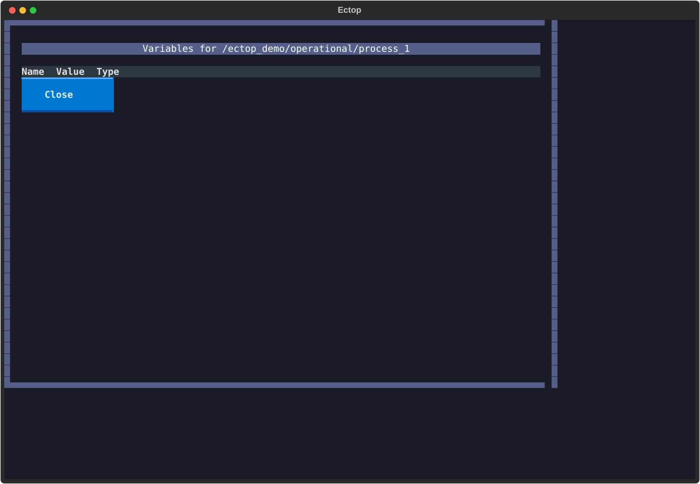

¶
WARNING: If you modify features, API, or usage, you MUST update the¶
documentation immediately.¶
¶
Tutorial: Mastering ectop¶
This tutorial will guide you through using ectop to monitor and manage a realistic ecFlow suite.
Prerequisites¶
- ecFlow Server: Ensure you have an ecFlow server running.
- ectop: Installed and ready to use.
Step 1: Initialize the Demo Environment¶
We provide a comprehensive demo script in examples/ectop_demo.py that sets up a suite with various features (limits, triggers, and expected failures).
- Load the demo suite:
This script will:
- Create a suite named
ectop_demo. - Generate all necessary task scripts in
./ectop_demo_home. - Load the definition into your local server and begin playback.
- Create a suite named
Step 2: Launch ectop¶
Start ectop to monitor the demo suite:
You should see the ectop_demo suite in the tree on the left.

🛠️ Core Interactions¶
🌳 Navigating the Tree¶
- Use Arrow Keys to move up and down.
- Press Enter to expand or collapse families and suites.
- Icons indicate node status:
- 🔵 Queued: Waiting for its turn.
- 🔥 Active: Currently running.
- 🟢 Complete: Finished successfully.
- 🔴 Aborted: Failed.
- 🟠 Suspended: Paused by a user.
📄 Viewing Node Content¶
Select a task (e.g., ectop_demo/operational/batch/process_1) and press l to Load.
- Output Tab: View the live log output.
- Script Tab: See the .ecf source script.
- Job Tab: Inspect the generated job file sent to the scheduler.
⚡ Node Operations¶
Manage your workflow with simple keypresses:
- Suspend (s) / Resume (u): Pause or unpause nodes.
- Kill (k): Terminate an active task.
- Force Complete (f): Manually mark a task as successful.
- Requeue (Shift + R): Reset a node and its children to the Queued state.
🔍 Advanced Features¶
❓ Why is it Queued?¶
If a task is stuck in the Queued state, select it and press w to open the Why Inspector. It will show you exactly what is blocking the node, such as:
- Unmet trigger expressions (e.g., task_a == complete).
- Resource limits (e.g., max_jobs limit reached).
- Time dependencies.

🕵️ Searching the Suite¶
In large deployments, finding a node can be difficult.
1. Press / to open the Search Box.
2. Type part of the node name or path.
3. The tree will filter in real-time. Press Enter to select the match and clear the search.
🎭 Filtering by Status¶
Focus on what matters by filtering the tree.
- Cycle Filter (Shift + F): Cycle through status filters like Aborted, Active, or Suspended.
- Focus Mode (Shift + H): A quick toggle to hide all complete nodes from the tree, allowing you to focus on work that is still in progress.
🧟 Zombie Management¶
Orphaned tasks (zombies) can sometimes clog your scheduler. Press Shift + Z to open the Zombie Dashboard.
- View all zombies across the server with their process IDs and creation times.
- Select a zombie and use f to Fob, F to Fail, or a to Adopt it.
📊 Performance Timeline¶
To identify bottlenecks in your workflow, check the Timeline tab in the main content area (available after pressing l on a family or task).
- Visualizes the relative state-change times of sibling tasks.
- Helps identify which tasks in a family are taking the longest to start or finish.
📝 Managing Variables¶
Select any node and press v to open the Variable Tweaker.
- View User, Generated, and Inherited variables.
- Press Edit to modify an existing variable.
- Press Add to create a new variable (useful for overriding inherited values).

✍️ On-the-fly Script Editing¶
Need to fix a bug in a script?
1. Select the task and press e.
2. Your local $EDITOR opens with the script content.
3. Save and quit your editor.
4. ectop will prompt to update the script on the server and optionally Requeue the task to apply the fix immediately.
🎮 Server Management¶
ectop also allows you to control the ecFlow server itself:
- Halt Server (Shift + H): Stops the server from scheduling new tasks.
- Start Server (Shift + S): Resumes scheduling.
- Load New Definitions (Shift + L): Load additional .def files without leaving the TUI.
Next Steps¶
- Explore the Architecture to understand how
ectopmaintains performance. - Check the Options for a full list of configuration environment variables.